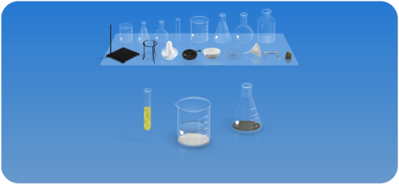
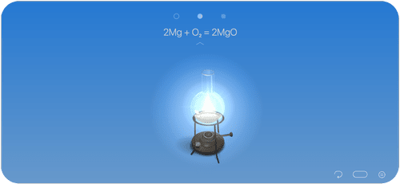

Chemist 深度对比：虚拟化学实验室该选它吗？
把 Chemist 放进虚拟化学模拟软件的坐标系里审视，看看它凭什么在同类中站稳脚跟，又有哪些取舍是你需要提前了解的。
虚拟化学模拟这个品类，这两年冒出来的工具不少。从简单的反应演示到接近真实实验台的完整模拟，定位差异很大。Chemist 属于比较特别的一档——它不是那种只给你看几个预设反应的"PPT 式"演示工具，也不是动辄几个 GB、需要高性能显卡才能跑的工业级仿真器。它卡在中间，做得很聚焦，也因此在学生群体和化学爱好者圈子里积累了口碑。
同类格局里的位置
先给个坐标。市面上的化学模拟工具大致分三档：
最基础的一档是"反应浏览器"——点一个反应方程式，看动画。够用但太浅，适合初中入门看看热闹。中间档是"实验自由搭"——给你一套烧杯烧瓶和一堆试剂，自己倒自己混，Chemist 就坐在这里。最上面一档是专业级的分子动力学模拟或化工流程仿真，那个不是给学生用的。
Chemist 在中间档里又跟同类有点不一样。多数同价位的工具把重点放在"还原实验操作流程"——酒精灯怎么点、滴定管怎么读数，界面做得像真实操作台。Chemist官网 的设计思路反而是先抓住化学本质，再谈操作感。它的试剂分类不是按学科教材的章节死记硬背，而是按物质在当前实验室温度下的实际状态来分。这一点听起来简单，实际做起来是个取舍——放弃了"教材即分类"的直观，换来了更真实的物质行为逻辑。

差异化：三个别家没有的点
试剂分类随温度动态变化
这是 Chemist 最让我印象深刻的一个设计。你把实验室温度调到 150°C，水会从液体自动归到气体类别；调低到零下，某些气体会变成液体。其他同类工具的试剂库通常是预先按"固体/液体/气体"静态分好的，标签贴死就不再动了。
这个动态分类不是为了炫技。它直接影响你怎么找试剂、怎么理解试剂的状态变化。比如你要做一个低温实验，发现之前在"气体"类别里找的东西跑到"液体"里去了——这本身就在帮你建立一个直觉：物质的状态是温度的函数，不是固定属性。很多同学做实验时对"常温下是气体，低温时液化"这个概念一直停留在文字层面，用 Chemist 摸几次就通了。
CloudLab 持续扩展机制
多数化学模拟软件的试剂库是"出厂即固定"的——要么一次性给全，要么出大版本更新才加新试剂。Chemist下载 后就能用 CloudLab，联网时自动下载新试剂包，图标上有小圆点标识。
这个机制妙在两点。一是社区驱动——官方说下载内容里有用户投票高需求的试剂，等于把扩展方向交给了实际在用的人。二是零感知更新——你不需要手动检查版本、不需要下载补丁包，打开应用就悄悄装上了。缺点是免费版的 CloudLab 内容有限，付费版才能拿到全部扩展。
物理数据与反应的联动
点击任意试剂瓶，弹出的信息卡片里不仅有化学式和名称，还有密度、熔点、沸点、溶解度这些物理数据，以及一个"相关反应列表"。这个小功能看起来像是个"额外信息面板"，但实际学习时它的价值被低估了。
同类工具里，要么只给你化学式（太干），要么只给反应方程式（太偏应用）。Chemist 把两者绑在一起了——你在信息卡片里看到某个物质的熔点，转头就能看到它参与的几个典型反应，不需要在教材和模拟软件之间来回切窗口。对想系统复习的人来说，这个设计比单纯做实验更有用，查不到的参数可以翻Chemist文档。
取舍：为这些优势付出了什么
说了好的，也得说清楚代价。
上手门槛偏高。Chemist 的试剂库有 240+ 种，分类又是动态的，第一次打开你会懵——"我要找的那个东西去哪了？"它没有给新手预设"引导实验包"或者"快速开始教程"。对比下来，有些同类工具会给你按教材章节排好的实验清单，点一个就能跟着做。Chemist 更像是一个给"已经知道自己要做什么"的人用的工具箱。
免费版限制明显。免费版只有基础无机物和少量有机物（约 10+ 种），付费版解锁全部 180+ 无机物 + 60+ 有机物 + CloudLab 更新。对于只想体验一下的人来说，免费版能做的实验相当有限。而有些同类工具的免费版就能覆盖大部分高中化学实验。
移动端为主。Chemist 在平板上体验很好，但 PC 端的功能和交互都缩水了。如果你习惯在电脑上做大篇幅的实验记录或者多窗口对照资料，Chemist 可能不是最佳选择——它天生就是为触屏设计的。

选购结论
最后给个明确的判断。
如果你是正在系统学习化学的学生（高中到大学普通化学阶段），想在手机或平板上有一个可以随时打开做实验的工具，Chemist 值得。它能帮你建立对物质状态、反应条件的直觉，而且 CloudLab 的扩展意味着它不会像一些老工具那样很快就"玩遍了"。
如果你是零基础入门或者只是想"看个热闹"，那 Chemist 可能不是最友好的起点——它的自由度反而是个负担，你会不知道从哪里开始。这种情况更适合选有预设实验流程、引导性强的工具。
如果你需要的是PC 端深度使用，或者你做的是专业级的化学仿真（比如分子模拟、化工流程），Chemist 也不是你的菜——前者去看它的竞品，后者直接上专业软件。
Chemist 官网可以了解更多细节，需要安装的话从 Chemist 下载获取。想深入了解它的完整试剂列表和实验指南，可以去 Chemist 文档看看。
如果你决定入手，或者只是想看看社区都在用它做什么实验，这套资料在三个平台都能拿到，国内访问也方便——GitHub、Gitee、GitCode 上都有对应的同步版本。